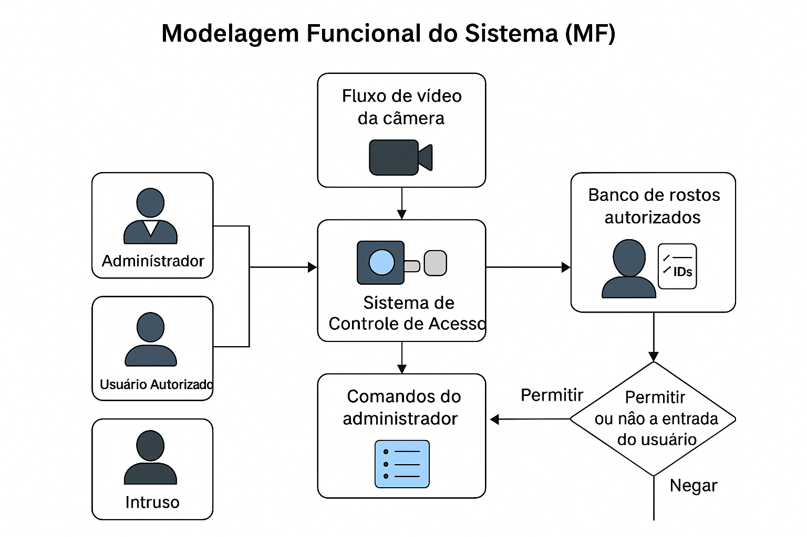

O Sistema de Controle de Acesso com Visão Computacional foi desenvolvido para melhorar a segurança em ambientes escolares, como salas de aula, escritórios ou outras áreas restritas. Ele utiliza tecnologia de reconhecimento facial para garantir que apenas pessoas autorizadas possam acessar locais específicos, proporcionando mais segurança para alunos, professores e colaboradores.
Em muitos ambientes, os sistemas de controle de acesso ainda dependem de métodos tradicionais como cartões de identificação, senhas ou listas de presença, os quais podem ser facilmente esquecidos ou burlados. Esse sistema propõe uma solução mais eficiente e segura, que usa câmeras e inteligência artificial para reconhecer os rostos das pessoas e permitir ou bloquear a entrada automaticamente, sem intervenção humana.
A calibração de câmeras é essencial em visão computacional, especialmente em áreas como reconstrução 3D, realidade aumentada e robótica. Ela permite corrigir distorções ópticas e associar pontos do mundo real com suas projeções em imagens.
A matriz intrínsecacontém dados como o foco da lente e o centro da imagem, transformando pontos do mundo real para coordenadas em pixels.
Os parâmetros extrínsecos, compostos pela matriz de rotação e o vetor de translação, indicam a posição e direção da câmera no espaço.
Os parâmetros de distorção corrigem imperfeições óticas da lente, como deformações nas bordas da imagem.
Esses elementos permitem uma representação mais precisa dos objetos no mundo real, fundamental para várias aplicações em visão computacional.
A filtragem de imagens é um processo utilizado para modificar ou melhorar características específicas de uma imagem, como suavização, nitidez ou remoção de ruído.
Um dos filtros mais comuns é o filtro gaussiano, que aplica uma suavização à imagem, borrando-a. Ele é baseado na função gaussiana, que dá mais peso aos pixels próximos e menos aos distantes, resultando em um efeito de desfoque suave.
Esse tipo de filtragem é útil para reduzir ruídos em uma imagem e é amplamente utilizado em pré-processamento para tarefas como detecção de bordas e segmentação.
A transformação geométrica em imagens é o processo de modificar a posição ou o tamanho de uma imagem por meio de operações matemáticas.
A rotação envolve girar a imagem em torno de um ponto central, geralmente o centro da imagem. Essa operação é útil para alinhar objetos ou corrigir orientações.
A translação desloca a imagem em uma direção específica, movendo-a para uma nova posição no plano. Esse tipo de transformação é frequentemente usado para ajustar o posicionamento de objetos na imagem.
O redimensionamento (resize) altera o tamanho da imagem, seja para aumentá-la ou diminuí-la. Essa transformação é usada para ajustar a resolução da imagem, preservando ou modificando suas proporções.
O reconhecimento facial é a tarefa de identificar ou verificar pessoas com base em suas características faciais. É utilizado em segurança, autenticação e marketing.
A biblioteca face_recognition em Python facilita o processo, permitindo detectar, reconhecer e comparar faces em imagens usando modelos de aprendizado profundo.
O método Eigenfaces é uma técnica clássica que utiliza análise de componentes principais (PCA) para representar imagens faciais como combinações de características principais. O reconhecimento é feito comparando a face de entrada com essas eigenfaces.
Embora o Eigenfaces seja eficiente, ele pode ser sensível a variações de iluminação e expressão. A biblioteca face_recognition usa métodos mais robustos, com melhores resultados.
O sistema recebe o fluxo de vídeo da câmera instalada na entrada e compara os rostos detectados com o banco de dados de usuários autorizados.
O administrador pode cadastrar e remover usuários, consultar o histórico e configurar alertas via interface.
Saídas: porta aberta ou fechada, registro de acessos e notificações em casos não auto
O fluxo do projeto é apresentado abaixo:

O sistema implementado em projeto.py realiza o controle de acesso por reconhecimento facial, utilizando Python, OpenCV, dlib. O usuário pode calibrar a câmera, cadastrar rostos, treinar modelos e realizar o reconhecimento em tempo real.
cv2.GaussianBlur), reduzindo ruídos e melhorando a qualidade das imagens para o reconhecimento.
cv2.resize) e as imagens passam por remapeamento para correção de distorção da lente (cv2.remap), garantindo padronização e precisão.
cv2.calibrateCamera e gera mapas de desdistorção para uso posterior.
O código fonte pode ser encontrado no arquivo projeto.py
Varre índices de 0 até max_cameras-1, abre cada dispositivo com OpenCV e adiciona à lista se um frame válido é lido. Retorna a lista de índices detectados.
def detectar_cameras(max_cameras=10):
print("Procurando por câmeras conectadas...")
indices_disponiveis = []
for i in range(max_cameras):
cap = cv2.VideoCapture(i)
if cap.read()[0]:
print(f"Câmera encontrada no índice {i}")
indices_disponiveis.append(i)
cap.release()
return indices_disponiveis
Usa a primeira câmera encontrada, mostra um contador de 2s, tenta detectar um tabuleiro de xadrez 8×6 e, quando detectado no momento do disparo, salva até 20 imagens para calibração.
def tirar_fotos():
indices = detectar_cameras()
if len(indices) < 1:
print("Menos de uma câmera detectadas. Conecte duas e tente novamente.")
return
CamL_id = indices[0]
CamL = cv2.VideoCapture(CamL_id)
for i in range(100):
retL, frameL = CamL.read()
cv2.imshow('Grupo PSC', frameL)
CamL.release()
CamL = cv2.VideoCapture(CamL_id)
start = time.time()
T = 2
count = 0
while True:
timer = T - int(time.time() - start)
retL, frameL = CamL.read()
img1_temp = frameL.copy()
cv2.putText(img1_temp, f"{timer}", (50, 50), 1, 5, (55, 0, 0), 5)
cv2.imshow('Grupo PSC', img1_temp)
grayL = cv2.cvtColor(frameL, cv2.COLOR_BGR2GRAY)
retL, cornersL = cv2.findChessboardCorners(grayL, (8, 6), None)
if (retL == True) and timer <= 0 and count <20:
count += 1
cv2.imwrite(f'{path}/img{count}.png', frameL)
if timer <= 0:
start = time.time()
if (cv2.waitKey(1) & 0xFF == 27) or (count>=20) :
print("Closing the cameras!")
break
CamL.release()
cv2.destroyAllWindows()
Para cada imagem salva (img1..img20), detecta cantos do tabuleiro 8×6, refina com cornerSubPix, desenha e acumula pares 3D–2D. Ao final chama calcula_params.
def calibragem():
print("Extracting image coordinates of respective 3D pattern ....\n")
criteria = (cv2.TERM_CRITERIA_EPS + cv2.TERM_CRITERIA_MAX_ITER, 30, 0.001)
objp = np.zeros((8 * 6, 3), np.float32)
objp[:, :2] = np.mgrid[0:8, 0:6].T.reshape(-1, 2)
img_ptsL = []
img_ptsR = []
obj_pts = []
for i in tqdm(range(1, 21)):
imgL = cv2.imread(f"{path}/img{i}.png")
imgL_gray = cv2.cvtColor(imgL, cv2.COLOR_BGR2GRAY)
outputL = imgL.copy()
retL, cornersL = cv2.findChessboardCorners(outputL, (8, 6), None)
if retL:
obj_pts.append(objp)
cv2.cornerSubPix(imgL_gray, cornersL, (11, 11), (-1, -1), criteria)
cv2.drawChessboardCorners(outputL, (8, 6), cornersL, retL)
#cv2.imshow('Grupo PSC', outputL)
img_ptsL.append(cornersL)
cv2.imwrite(f'{path}/img{i}.png', outputL)
calcula_params(obj_pts, img_ptsL, imgL_gray)
Roda cv2.calibrateCamera para obter intrínsecos e distorção. Cria mapas de remapeamento com initUndistortRectifyMap e salva em params_py.xml.
def calcula_params(obj_pts, img_ptsL, imgL_gray):
print("Calculating left camera parameters ... ")
retL, mtxL, distL, rvecsL, tvecsL = cv2.calibrateCamera(obj_pts, img_ptsL, imgL_gray.shape[::-1], None, None)
Left_Stereo_Map = cv2.initUndistortRectifyMap(
mtxL, distL, None, mtxL, imgL_gray.shape[::-1], cv2.CV_16SC2
)
print("Saving parameters ......")
cv_file = cv2.FileStorage(f"{path}/params_py.xml", cv2.FILE_STORAGE_WRITE)
cv_file.write("Left_Stereo_Map_x", Left_Stereo_Map[0])
cv_file.write("Left_Stereo_Map_y", Left_Stereo_Map[1])
cv_file.release()
Garante que a pasta dataset_faces exista para salvar os recortes de rosto.
def criar_diretorio_dataset():
if not os.path.exists(dataset_path):
os.makedirs(dataset_path)
Lê o nome do usuário, carrega os mapas de remapeamento da calibração, detecta um rosto (Haar Cascade), faz um countdown de 3s, recorta, suaviza e salva uma imagem 200×200 em dataset_faces/<usuario>_0.png.
def capturar_fotos_rosto():
num_fotos = 1
nome_usuario = input("Digite o nome do usuário para capturar as fotos: ").strip()
if not nome_usuario:
print("[ERRO] Nome de usuário inválido!")
return
cv_file = cv2.FileStorage(f"{path}/params_py.xml", cv2.FILE_STORAGE_READ)
Left_Stereo_Map_x = cv_file.getNode("Left_Stereo_Map_x").mat()
Left_Stereo_Map_y = cv_file.getNode("Left_Stereo_Map_y").mat()
cv_file.release()
indices = detectar_cameras()
if len(indices) < 1:
print("❌ Nenhuma câmera detectada.")
return
CamL = cv2.VideoCapture(indices[0])
criar_diretorio_dataset()
face_cascade = cv2.CascadeClassifier(cv2.data.haarcascades + "haarcascade_frontalface_default.xml")
print(f"[INFO] Capturando {num_fotos} fotos de {nome_usuario}...")
count = 0
countdown_time = 3
start_time = None
while count < num_fotos:
retL, frameL = CamL.read()
if not retL:
continue
frameL = cv2.remap(frameL, Left_Stereo_Map_x, Left_Stereo_Map_y, cv2.INTER_LINEAR)
#grayL = cv2.cvtColor(frameL, cv2.COLOR_BGR2GRAY)
grayL = frameL
facesL = face_cascade.detectMultiScale(grayL, 1.3, 5)
rosto = None
if len(facesL) > 0:
if start_time is None:
start_time = time.time()
elapsed = time.time() - start_time
countdown = countdown_time - int(elapsed)
(x, y, w, h) = facesL[0]
rosto = grayL[y:y+h, x:x+w]
rosto = cv2.resize(rosto, (200, 200))
rosto = cv2.GaussianBlur(rosto, (5, 5), 0) # Suavização de ruído
cv2.imshow("PSC - Rosto Suavizado", rosto) # Exibe o rosto suavizado
cv2.rectangle(frameL, (x, y), (x+w, y+h), (0, 255, 0), 2)
cv2.putText(frameL, f"Contagem: {countdown}", (10, 30),
cv2.FONT_HERSHEY_SIMPLEX, 1, (0, 0, 255), 2)
else:
start_time = None
countdown = countdown_time
cv2.putText(frameL, f"Foto {count+1}/{num_fotos}", (10, frameL.shape[0]-10),
cv2.FONT_HERSHEY_SIMPLEX, 0.7, (0, 255, 0), 2)
cv2.imshow("Grupo PSC", frameL)
if rosto is not None and start_time is not None and elapsed >= countdown_time:
# Salvar com nome do usuário, e incrementar índice para não substituir
foto_path = f"{dataset_path}/{nome_usuario}_{count}.png"
cv2.imwrite(foto_path, rosto)
print(f"[INFO] Foto {count+1} salva em {foto_path}")
count += 1
start_time = None
time.sleep(0.5)
if cv2.waitKey(1) & 0xFF == 27:
print("[INFO] Captura interrompida.")
break
CamL.release()
cv2.destroyAllWindows()
print(f"[INFO] Captura de fotos para {nome_usuario} concluída.")
Lê imagens do dataset, converte para tons de cinza, cria rótulos a partir do prefixo do arquivo, treina um EigenFaceRecognizer e retorna o reconhecedor e o mapa de rótulos.
def treinar_eigenfaces():
"""
Carrega as imagens do dataset, treina o modelo Eigenfaces e retorna o reconhecedor treinado.
"""
print("[INFO] Carregando dataset e treinando Eigenfaces...")
faces = []
labels = []
label_map = {}
current_label = 0
path_str = f"{dataset_path}/"
for filename in os.listdir(path_str):
if filename.endswith(".png") or filename.endswith(".jpg"):
img_path = os.path.join(path_str, filename)
# Lê a imagem e converte para grayscale se necessário
img = cv2.imread(img_path, cv2.IMREAD_GRAYSCALE)
if img is None:
print(f"[WARN] Não foi possível carregar a imagem {img_path}")
continue
# Extrai o nome do usuário do nome do arquivo
nome_usuario = filename.rsplit('_', 1)[0]
if nome_usuario not in label_map:
label_map[nome_usuario] = current_label
current_label += 1
faces.append(img)
labels.append(label_map[nome_usuario])
if len(faces) == 0:
print("[ERRO] Dataset vazio! Capture fotos antes de treinar.")
return None, None
recognizer = cv2.face.EigenFaceRecognizer_create()
recognizer.train(faces, np.array(labels))
print("[INFO] Treinamento concluído.")
return recognizer, label_map
Abre a webcam, aplica remapeamento da calibração, detecta rostos, redimensiona para 200×200, faz predict no reconhecedor Eigenfaces e escreve o nome/“desconhecido” no frame.
def reconhecer_rosto_eigenface(recognizer, label_map):
"""
Captura imagem da webcam, aplica calibração com remap, detecta o rosto e tenta reconhecê-lo usando o modelo Eigenfaces.
"""
if recognizer is None or label_map is None:
print("[ERRO] Modelo não treinado!")
return
# === Ler parâmetros de calibração (remap) ===
print("[DEBUG] Carregando parâmetros de calibração...")
cv_file = cv2.FileStorage(f"{path}/params_py.xml", cv2.FILE_STORAGE_READ)
Left_Stereo_Map_x = cv_file.getNode("Left_Stereo_Map_x").mat()
Left_Stereo_Map_y = cv_file.getNode("Left_Stereo_Map_y").mat()
cv_file.release()
print("[DEBUG] Mapas de calibração carregados com sucesso.")
# === Inicializar câmera ===
cam = cv2.VideoCapture(0)
face_cascade = cv2.CascadeClassifier(cv2.data.haarcascades + "haarcascade_frontalface_default.xml")
print("[INFO] Posicione seu rosto na frente da câmera para reconhecimento.")
while True:
ret, frame = cam.read()
if not ret:
print("[ERRO] Falha ao capturar frame da câmera.")
continue
# === Aplicar calibração com remap ===
frame_corrigido = cv2.remap(frame, Left_Stereo_Map_x, Left_Stereo_Map_y, cv2.INTER_LINEAR)
gray = cv2.cvtColor(frame_corrigido, cv2.COLOR_BGR2GRAY)
faces = face_cascade.detectMultiScale(gray, scaleFactor=1.3, minNeighbors=5)
print(f"[DEBUG] {len(faces)} rosto(s) detectado(s).")
for i, (x, y, w, h) in enumerate(faces):
rosto = gray[y:y+h, x:x+w]
rosto = cv2.resize(rosto, (200, 200))
# Exibe o rosto isolado
cv2.imshow(f"Grupo PSC {i+1}", rosto)
# Salva imagem do rosto para inspeção
debug_img_path = f"debug_rosto_predito_{i+1}.png"
cv2.imwrite(debug_img_path, rosto)
print(f"[DEBUG] Rosto {i+1} salvo como {debug_img_path}")
# === Predição ===
label_id, confianca = recognizer.predict(rosto)
print(f"[DEBUG] Rosto {i+1} - Label predito: {label_id}, Confiança: {confianca:.2f}")
# === Verifica confiança ===
limiar_confianca = 3500 # Ajuste idealmente com validação
if confianca > limiar_confianca:
texto = f"Desconhecido - Confiança: {confianca:.2f}"
print("[DEBUG] Reconhecimento falhou (desconhecido)")
else:
nome_usuario = None
for nome, idx in label_map.items():
if idx == label_id:
nome_usuario = nome
break
texto = f"{nome_usuario} - Confiança: {confianca:.2f}"
print(f"[DEBUG] Reconhecido como {nome_usuario}")
# === Mostrar na tela ===
cv2.rectangle(frame_corrigido, (x, y), (x + w, y + h), (0, 255, 0), 2)
cv2.putText(frame_corrigido, texto, (x, y - 10), cv2.FONT_HERSHEY_SIMPLEX, 0.8, (0, 255, 0), 2)
# === Mostrar imagem final com anotações ===
cv2.imshow("Grupo PSC - Reconhecimento Facial (Eigenfaces)", frame_corrigido)
if cv2.waitKey(1) & 0xFF == 27: # ESC para sair
print("[INFO] Reconhecimento encerrado pelo usuário.")
break
cam.release()
cv2.destroyAllWindows()
Carrega encodes do dataset com a lib face_recognition, abre webcam, localiza rostos, compara distâncias para identificar o mais próximo e escreve nome e “confiança” no frame.
def reconhecer_rosto_face_recognition():
dataset_path = "dataset_faces"
print("[INFO] Carregando imagens do dataset para reconhecimento...")
imagens = []
nomes = []
codificacoes = []
# Carregar imagens e nomes
for arquivo in os.listdir(dataset_path):
if arquivo.endswith(".png") or arquivo.endswith(".jpg"):
caminho_imagem = os.path.join(dataset_path, arquivo)
img = face_recognition.load_image_file(caminho_imagem)
codificacao = face_recognition.face_encodings(img)
if len(codificacao) > 0:
codificacoes.append(codificacao[0])
nome_usuario = arquivo.rsplit('_', 1)[0]
nomes.append(nome_usuario)
else:
print(f"[WARN] Nenhum rosto encontrado na imagem {arquivo}")
if len(codificacoes) == 0:
print("[ERRO] Nenhuma codificação facial válida encontrada no dataset!")
return
indices = detectar_cameras()
if len(indices) < 1:
print("❌ Nenhuma câmera detectada.")
return
CamL = cv2.VideoCapture(indices[0])
print("[INFO] Iniciando reconhecimento. Pressione ESC para sair.")
while True:
ret, frame = CamL.read()
if not ret:
continue
rgb_frame = cv2.cvtColor(frame, cv2.COLOR_BGR2RGB)
faces = face_recognition.face_locations(rgb_frame)
codificacoes_frame = face_recognition.face_encodings(rgb_frame, faces)
for (top, right, bottom, left), codificacao_rosto in zip(faces, codificacoes_frame):
resultados = face_recognition.compare_faces(codificacoes, codificacao_rosto)
distancias = face_recognition.face_distance(codificacoes, codificacao_rosto)
melhor_indice = np.argmin(distancias) if len(distancias) > 0 else None
if melhor_indice is not None and resultados[melhor_indice]:
nome = nomes[melhor_indice]
confianca = 1 - distancias[melhor_indice] # Confiança inversa da distância
else:
nome = "Desconhecido"
confianca = 0
cv2.rectangle(frame, (left, top), (right, bottom), (0, 255, 0), 2)
cv2.putText(frame, f"{nome} ({confianca:.2f})", (left, top - 10),
cv2.FONT_HERSHEY_SIMPLEX, 0.8, (0, 255, 0), 2)
cv2.imshow("Grupo PSC - Reconhecimento Face_Recognition", frame)
if cv2.waitKey(1) & 0xFF == 27: # ESC para sair
break
CamL.release()
cv2.destroyAllWindows()
Fluxo em modo terminal: calibração (com captura, se necessário), captura de rosto (se necessário), treinamento Eigenfaces e escolha do método de reconhecimento (Eigenfaces ou face_recognition).
def run():
cal = input("Já tirou foto? (s/n) ")
if cal == "n":
tirar_fotos()
calibragem()
else:
calibragem()
face = input("Já tirou foto face? (s/n) ")
if face == "n":
capturar_fotos_rosto()
recognizer, label_map = treinar_eigenfaces()
else:
recognizer, label_map = treinar_eigenfaces()
metodo = input("Escolha o método de reconhecimento:\n1 - Eigenfaces\n2 - face_recognition\nDigite 1 ou 2: ")
if metodo == "1":
reconhecer_rosto_eigenface(recognizer, label_map)
elif metodo == "2":
reconhecer_rosto_face_recognition()
else:
print("Método inválido. Encerrando.")
Ideia central: aplicar PCA (Análise de Componentes Principais) em imagens de rosto para encontrar uma base de “eigenfaces” que explicam a maior parte da variância do conjunto. Novas imagens são projetadas nesse subespaço e classificadas por distância ao vizinho mais próximo.
dataset_faces/, converte para escala de cinza e treina com cv2.face.EigenFaceRecognizer_create().200×200 e chama recognizer.predict(). Um limiar (ex.: 3500) decide “desconhecido”.face_recognition (dlib)Ideia central: transformar cada rosto em um vetor de 128 dimensões usando uma rede neural (ResNet) treinada com perda métrica. Rostos da mesma pessoa ficam próximos nesse espaço; diferentes, distantes.
compare_faces usa tolerância típica ≈ 0.6.1 - distância é apenas heurística visual; não é probabilidade calibrada.| Aspecto | Eigenfaces (OpenCV) | face_recognition (dlib) |
|---|---|---|
| Representação | PCA (subespaço linear de “eigenfaces”) | Embedding 128-D por rede neural (ResNet) |
| Treinamento | Treina modelo com todo o dataset (calcula base PCA) | Não treina por pessoa; apenas extrai embeddings e armazena |
| Métrica / Saída | Distância no subespaço; “confidence” é distância (menor=melhor) | Distância Euclidiana entre embeddings; compare_faces usa tolerância (≈0.6) |
| Robustez | Baixa para variações de luz/pose/oclusão | Alta para variações moderadas |
| Pré-processamento | Exige forte padronização (grayscale, alinhamento, tamanho fixo) | Alinhamento via landmarks embutido; ainda ajuda padronizar |
| Dados por pessoa | Poucos já funcionam, mas ambiente precisa ser controlado | Quanto mais diversidade, melhor generalização |
| Velocidade | Muito rápido (projeção em PCA) | Razoável (custo do embedding é maior) |
| Ajuste de decisão | Limiar empírico da distância (ex.: 3500 no seu código) | Tolerância empírica (ex.: 0.6); ajustar conforme FAR/FRR |
| Escalabilidade | Adicionar pessoas pode exigir re-treino do PCA | Basta adicionar novos embeddings; não requer re-treino global |
Para visualizar a demonstração prática da aplicação dos métodos de reconhecimento facial, acesse o link abaixo:
O teste em campo ocorreu no dia 11/08/2025 e disponibilizamos o seguinte passo a passo para as pessoas abaixo.
Siga os passos abaixo para operar o sistema e coletar os resultados:
Por favor, clique no link abaixo para acessar o questionário de avaliação e responder às questões sobre o experimento:
Acessar Questionário| Requisito | Onde no código | Trecho correspondente |
|---|---|---|
| Filtragem de imagens | capturar_fotos_rosto() — suavização do recorte do rosto |
|
| Transformações geométricas |
a) Redimensionamento do rosto (padronização) b) Remapeamento (desdistorção por mapa) |
|
| Calibração de câmeras |
a) Coleta de cantos do tabuleiro (calibração) b) Estimativa de parâmetros e mapas |
|
| Propriedades intrínsecas e extrínsecas | calcula_params() — retornos de calibrateCamera |
|
| Item | Onde no código | Trecho correspondente |
|---|---|---|
| Reconhecimento — Eigenfaces (OpenCV) |
a) Treinamento do reconhecedor b) Predição no frame |
|
| Reconhecimento — face_recognition (dlib) |
a) Extração de embeddings do dataset b) Comparação de embeddings na webcam |
|
Nos testes, primeiro abrimos o sistema e fizemos a calibração da câmera usando o tabuleiro. O processo foi automático e deixou a câmera pronta para uso.
Depois, realizamos o cadastro de usuários. A pessoa ficava em frente à câmera, que tirava a foto automaticamente. Em seguida, o sistema pedia o nome para salvar o registro.
Na sequência, escolhemos o método de reconhecimento: Eigenfaces ou Face_Recognition._
Ao final, foi disponibilizado um questionário de avaliação para que os participantes dessem sua opinião sobre o experimento.
Foi elaborado um questionário para avaliar a percepção dos participantes sobre o sistema de controle de acesso com visão computacional. O objetivo foi verificar se os conceitos principais foram compreendidos e coletar opiniões sobre o funcionamento do sistema.
As perguntas aplicadas foram:
Com essas perguntas, buscamos avaliar o entendimento dos participantes e coletar feedback sobre a clareza e eficiência do experimento.
Com base no questionário aplicado, foram consideradas apenas as respostas dos participantes que obtiveram nota registrada. Abaixo estão os resultados individuais:
| R.A. | Nome | Nota |
|---|---|---|
| 11201921101 | CAIO VILOR BRANDAO | 10,0 |
| 11201921175 | GUILHERME DE SOUSA SANTOS | 8,3 |
| 11202130906 | GUILHERME DO AMARAL | 10,0 |
| 11202020351 | IAN VICTOR TONIOLO SILVA | 10,0 |
| 11202320802 | IGOR DOMINGOS DA SILVA MOZETIC | 10,0 |
| 11202320245 | JHONATAN FERREIRA MACHADO | 8,3 |
| 11058715 | JORGE LUIZ PINTO JUNIOR | 10,0 |
| 11201920579 | LEONARDO SEVERGNINE MAIOLI | 10,0 |
| 11201922156 | LUCAS PEREIRA DE MEDEIROS | 10,0 |
| 11201921617 | LUCAS SANCHEZ BITENCOURT | 10,0 |
| 11201920483 | MARCELA CESCHIM CABURLAO | 8,3 |
| 11201921777 | MARCOS BALDRIGUE ANDRADE | 10,0 |
| 21055813 | MIKAEL ALVES MONTEIRO | 10,0 |
| CONVIDADO | MARCO ANTONIO DE CAMPOS | 8,3 |
| CONVIDADO | IRIS REGINA CORNETTA DE CAMPOS | 10,0 |
De forma geral, os resultados mostram um alto nível de acerto, com a maioria dos participantes alcançando a nota máxima (10,0). Alguns participantes obtiveram 8,3, indicando pequenas dificuldades em pontos específicos, mas ainda assim com bom desempenho. Isso demonstra que o sistema e o questionário foram bem compreendidos pela maioria dos avaliados.
O projeto de Sistema de Controle de Acesso com Visão Computacional demonstrou ser uma solução viável e eficiente para aumentar a segurança em ambientes escolares e corporativos. Com o uso de técnicas de calibração, filtragem e reconhecimento facial, foi possível implementar um sistema capaz de identificar usuários autorizados e registrar acessos de forma automática, reduzindo falhas comuns em métodos tradicionais como senhas e cartões.
Durante o desenvolvimento, foram adquiridos aprendizados valiosos no campo da visão computacional, como a importância do pré-processamento de imagens para aumentar a precisão dos algoritmos, o papel fundamental da iluminação e do posicionamento da câmera na qualidade da detecção, além do entendimento prático de como redes neurais e técnicas de machine learning podem ser aplicadas para reconhecimento facial em tempo real.
Os testes em campo mostraram resultados positivos, com alta taxa de acertos e boa aceitação pelos participantes. Assim, concluímos que o sistema cumpre seu objetivo de aliar tecnologia e segurança, apresentando grande potencial para aplicações reais e futuras melhorias com o avanço das técnicas de inteligência artificial.